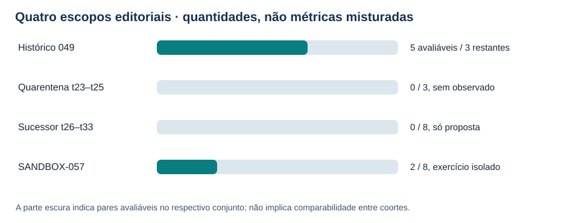
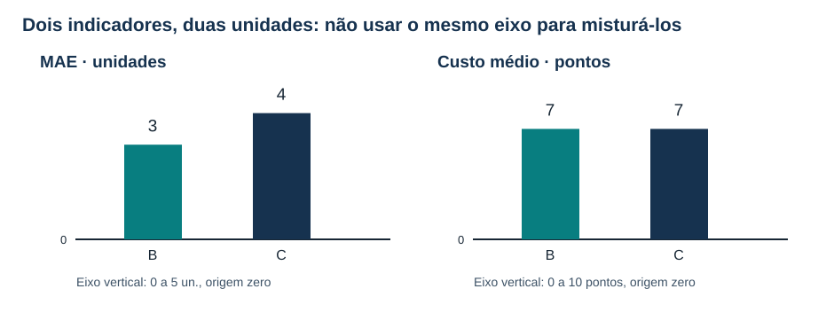
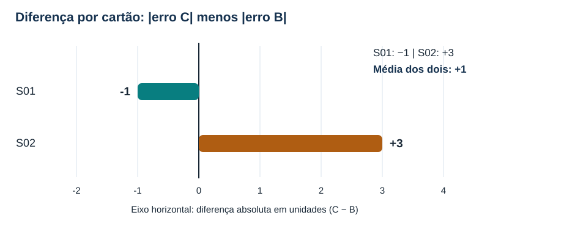
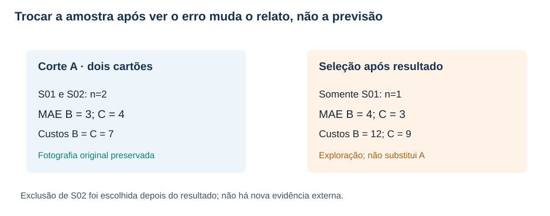
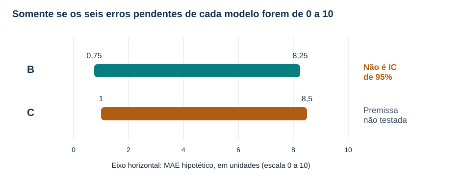

MAT-EST-059 — Comunicação comparativa de desempenho temporal: gráficos honestos, incerteza condicional e relatório executivo verificável
Área: Matemática. Unidade: Estatística, séries temporais e ponte universitária. Nível: 6. Anterior: MAT-EST-058. Próxima proposta: MAT-EST-060. Origem: aula e exercícios autorais; zero questões oficiais. Progresso individual: não iniciado, inalterado. Produzir este pacote não comprova leitura nem domínio.
Organização flexível: bloco A, preservar populações e interpretar gráficos (25–50 minutos); bloco B, avaliar diferenças, seleção e limites (25–50 minutos); bloco C, escrever, auditar e praticar o relatório (25–50 minutos). O estudo pode retomar qualquer fundamento necessário, sem fixar disciplina por dia.
1. Objetivo, pré-requisitos e por que esta aula existe
Ao estudar e realizar as atividades, você deverá: distinguir coorte histórica de exercício didático; definir denominadores antes de exibir médias; construir gráficos cuja escala não exagere diferenças; apresentar dois indicadores de unidades diferentes em painéis separados; explicar uma diferença por par e não apenas duas médias; enunciar as premissas dos limites condicionais; detectar exclusão posterior ao resultado; redigir um relatório executivo que permita refazer cada número a partir de arquivos, versão e corte; e separar evidência descritiva de decisão de governança.
Pré-requisitos conceituais: fração, porcentagem, média, módulo, diferença com sinal, leitura de eixos e escala. Precedentes específicos: MAT-EST-047, para diagnóstico de erros; MAT-EST-049 e MAT-EST-050, para comparação e guarda; MAT-EST-053 e MAT-EST-054, para proveniência; MAT-EST-056 a MAT-EST-058, para protocolo, pendências e risco de seleção. Se a conta de média estiver insegura, refaça primeiro um exemplo com dois números em vez de avançar sem compreensão.
Por que o tópico existe? Um relatório pode usar números aritmeticamente corretos e comunicar uma conclusão indevida. Basta começar o eixo de um gráfico de colunas muito próximo dos valores, retirar silenciosamente um caso adverso, usar o total planejado no lugar da amostra avaliada ou apresentar um limite hipotético como se fosse intervalo de confiança. Nosso objetivo é construir uma comunicação que resistiria a perguntas simples: “Qual era o conjunto?”, “Quando foi congelado?”, “De onde veio o número?”, “O que não sabemos?” e “O que o protocolo permite concluir?”.
A camada transferível ao ENEM e aos vestibulares é a leitura crítica de gráficos, médias, proporcionalidade, representatividade e argumentação baseada em dados. Os detalhes de governança de modelos são uma ponte universitária; não afirmamos, sem edital, que uma banca exige este protocolo.
2. Primeiro separe os quatro universos: não existe uma média única de tudo
A série fictícia principal foi construída até t22. Os cinco pares históricos da experiência MAT-EST-049-PROT-v1 estão em t18–t22. Erro absoluto médio (MAE, sigla inglesa para mean absolute error) da referência B: 17,60 unidades; do desafiante C: 8,36 unidades. Custos didáticos médios B: 51,20 pontos; C: 14,92 pontos. Em t19 ocorreu piora local de C igual a 19,2 unidades, acima da guarda de dez unidades; o protocolo original continua não autorizando a promoção. O plano tinha oito pares, mas só cinco aparecem no relatório histórico. Nada aqui foi substituído por uma nova coorte.
Os alvos t23–t25 estão em quarentena editorial: faltam observações e emissões autenticadas. Os valores B23=183 e C23=199, vistos em aula precedente, são recálculos ilustrativos, não registros comprovados antes do alvo. Não foram incorporados a nenhuma média atual. Os alvos t26–t33 estão somente propostos no protocolo sucessor MAT-EST-056-PROT-SUC-v1, que permanece rascunho local. Há zero emissões, zero observações e zero pares avaliáveis. Portanto MAE do sucessor é não estimável, e não zero.
O SANDBOX-057 é um ambiente didático independente de oito cartões S01–S08, no corte A: dois pares avaliáveis, S01 e S02; seis pendências. Completude didática: dois divididos por oito, ou vinte e cinco por cento. A tabela de erros abaixo descreve somente S01 e S02. Nem o sandbox nem os casos isolados EXEMPLO-V e EXEMPLO-Z incrementam o histórico ou o sucessor.

Figura 1 — Quatro escopos, cada um com seu denominador. Texto alternativo: gráfico de barras que apresenta histórico cinco de oito, quarentena zero de três, sucessor zero de oito e sandbox dois de oito. Observe: a escala da barra representa fração avaliada dentro de cada coorte; não coloca os erros de todos os grupos na mesma média. Conclusão por áudio: há cinco pares históricos, nenhum resultado no futuro principal e apenas dois pares em um exercício isolado. Autoria: original do projeto.
É legítimo comunicar as contagens em uma tabela por coorte, mas não comparar um MAE ausente a um MAE existente como se fosse empate. Também não é legítimo juntar S01 e S02 aos cinco pares principais para obter “sete observações”; são populações, procedimentos e objetivos diferentes.
3. Gramática mínima de um gráfico verificável
Antes de escolher cores ou formas, escreva em texto a frase que o gráfico deverá sustentar. Por exemplo: “No corte A do exercício SANDBOX-057, dois entre oito cartões são avaliáveis, e as seis pendências não recebem erro zero”. O título deve declarar o assunto; os eixos precisam dizer a grandeza e a unidade; o subtítulo informa o corte e o n; a legenda nomeia símbolos sem depender exclusivamente da cor; e uma frase final mostra o padrão perceptível por áudio.
Tipo de gráfico e escala. Barras medem comprimento a partir da base: para comparar magnitudes positivas de erros e custos, use origem zero. Se mostrar uma tendência temporal numa linha, a origem vertical não precisa ser sempre zero, mas um recorte deve estar visível e justificado, sem criar exagero. Não interpolar uma linha contínua através de períodos sem dados: um espaço vazio é uma informação. Um gráfico de diferenças assinadas deve exibir a linha zero claramente, para separar valores positivos e negativos. E não misture unidades e pontos de custo em um único eixo numérico: são grandezas diferentes.
O guia da Datawrapper sobre barras iniciadas em zero explica por que truncar a origem pode distorcer a comparação visual; o guia de linhas discute quando a origem zero é facultativa. Essa é orientação externa, complementar aos números fictícios do nosso projeto.
Uma legenda não substitui o texto alternativo. O atributo alt ou a descrição do SVG deve falar o que está desenhado. A legenda explica o motivo didático; o parágrafo seguinte explicita os números e a inferência. Se o estudante escutar só “barra azul maior que verde”, não terá recebido o conceito. Também não use apenas tonalidades como “bom” e “ruim”: identifique B e C em texto, com sinal e unidades.
Armadilha deliberada para reconhecer: imagine um painel em que B=3 e C=4 sejam duas colunas, mas o eixo vertical comece em 2,9. A altura visível da coluna B seria 0,1 e de C seria 1,1; visualmente, a segunda pareceria onze vezes a primeira, embora os valores originais estejam na razão quatro para três. A solução é recuperar o zero em barras ou trocar por um gráfico de pontos claramente rotulado. Este exemplo de escala é autoral e não altera qualquer dado da série.
4. Exemplo resolvido: uma tabela, dois indicadores e dois eixos corretos
A convenção de erro é observado menos previsto. Erro positivo significa subprevisão; erro negativo significa superprevisão. O custo artificial é três pontos por unidade subprevista mais um ponto por unidade superprevista. A tabela a seguir é do SANDBOX-057, não da coorte principal.
| Cartão | Erro B (un.) | Erro C (un.) | Módulo B (un.) | Módulo C (un.) | Custo B (pontos) | Custo C (pontos) |
|---|---|---|---|---|---|---|
| S01 | +4 | +3 | 4 | 3 | 12 | 9 |
| S02 | −2 | −5 | 2 | 5 | 2 | 5 |
Por áudio: em S01 ambos os modelos subpreviram, com módulos quatro e três. Em S02 ambos superpreviram, com módulos dois e cinco. Somar módulos permite calcular MAE, enquanto o custo depende da direção. O custo de B em S01 é três vezes quatro, igual a doze pontos; o custo de C em S02 é cinco pontos, pois o erro foi negativo.
A fórmula do erro absoluto médio é MAE = soma dos módulos dos erros / número de pares elegíveis. Leitura: eme-á-ê é a soma dos tamanhos dos erros dividida pelo número de casos realmente avaliáveis. Assim, B tem (4+2)/2 = 3 unidades; C tem (3+5)/2 = 4 unidades. O custo médio é B (12+2)/2 = 7 pontos e C (9+5)/2 = 7 pontos. O denominador é dois para ambas as médias, não oito; oito vale para a taxa de completude.

Figura 2 — Magnitudes com origem zero e eixos separados. Texto alternativo: à esquerda, MAE B três e C quatro em unidades; à direita, custo médio B sete e C sete em pontos; ambos os eixos verticais começam em zero. Observe: um indicador difere e o outro empata; uma visualização isolada não responde todas as perguntas. Conclusão por áudio: C teve maior erro absoluto médio nos dois cartões, mas os custos médios são iguais para a regra fictícia definida. Autoria: original do projeto.
Se fizermos um painel com título “C é 33,3% pior em MAE”, a conta (4−3)/3 = 1/3 está correta somente para os dois cartões do sandbox e com B no denominador. O adjetivo “pior” deve vir acompanhado do escopo e da métrica; ele não autoriza extrapolação ao conjunto de oito, ao protocolo sucessor ou ao mundo real. Também não há porcentagem de vantagem para custo, pois a diferença entre as médias de custo é zero.
5. A diferença emparelhada mostra o que a média oculta
Defina d_i = |erro de C no cartão i| − |erro de B no mesmo cartão i|. Leia: dê índice i é módulo do erro de C menos módulo do erro de B no mesmo caso. Valores negativos significam que C teve erro absoluto menor naquele cartão; positivos significam maior. Em S01, três menos quatro dá menos uma unidade. Em S02, cinco menos dois dá mais três unidades. A média das duas diferenças é (-1+3)/2 = +1 unidade, compatível com MAE C quatro menos MAE B três.

Figura 3 — Duas diferenças de sinais opostos. Texto alternativo: eixo horizontal em unidades, com zero visível; S01 está em menos uma unidade, S02 em mais três e média em mais uma. Observe: o mesmo desafiante teve um caso com módulo menor e outro com módulo maior. Conclusão por áudio: o resumo de mais uma unidade é média de dois casos heterogêneos, não uma lei sobre períodos futuros. Autoria: original do projeto.
Por que emparelhar? Cada diferença compara modelos sobre o mesmo alvo, preservando as condições comuns ao caso. Se fossem escolhidos conjuntos de casos diferentes para B e C, a diferença entre duas médias não corresponderia à média das diferenças por alvo; ela misturaria desempenho com composição de amostra. Tampouco transforme duas diferenças em uma estimativa confiável de dispersão futura: são apenas dois resultados inventados.
6. Como um gráfico pode esconder uma seleção posterior
A fotografia primária do sandbox inclui S01 e S02. Se, depois de conhecer os resultados, alguém retira S02 porque C teve erro cinco ali, o painel passa a conter só S01. Nessa seleção posterior, o MAE fica B quatro, C três; os custos ficam B doze, C nove. Pareceria haver inversão da comparação. Nenhuma previsão melhorou. A amostra foi alterada depois de conhecer o desfecho. Uma análise assim pode ser registrada como exploração pós-resultado, mas não substituir o corte A previamente identificado.

Figura 4 — Duas fotografias não intercambiáveis. Texto alternativo: à esquerda, corte A com dois cartões e MAEs três e quatro; à direita, seleção apenas de S01 e MAEs quatro e três. Observe: a direção aparente se inverte porque S02 foi excluído após o resultado. Conclusão por áudio: informe sempre o denominador, o motivo e o momento de cada exclusão; não oculte os seis pendentes nem sobrescreva o corte original. Autoria: original do projeto.
Um relatório verificável deve incluir o registro da versão do conjunto de dados, a regra de elegibilidade, o instante lógico do corte, a lista de casos incluídos, pendentes e excluídos, o motivo e a data da alteração. A presença de uma correção em uma fotografia B não implica que A esteja errada: cada fotografia responde a uma pergunta temporal diferente. Os exercícios S04, S05 e S06 ilustram, respectivamente, chegada posterior ao corte, versão apenas provisória e ambiguidade de emissão; nenhum recebeu erro válido em A.
7. Incerteza condicional é uma conta “se... então...”, não garantia probabilística
Os seis cartões pendentes não informam seus erros. Para estudar o tamanho da ignorância, MAT-EST-058 propôs um teto puramente hipotético: em cada um dos seis casos, para cada modelo, o módulo do erro estaria entre zero e dez unidades. Essa hipótese M = 10 não foi demonstrada, não é limite operacional, não é cobertura estatística e não gera observações.
Para B, os módulos conhecidos somam seis. Oito módulos hipoteticamente completos somariam no mínimo seis e no máximo sessenta e seis. Dividindo por oito, o MAE condicional de B estaria entre 6/8 = 0,75 e 66/8 = 8,25 unidades. Para C, os módulos conhecidos somam oito; a média condicional estaria entre 8/8 = 1 e 68/8 = 8,5 unidades. A diferença C menos B começa em soma oito menos seis, igual a dois; cada par adicional poderia contribuir entre menos dez e mais dez. Assim, a diferença média condicional poderia situar-se entre (2−60)/8 = −7,25 e (2+60)/8 = +7,75 unidades.

Figura 5 — Faixas de MAE condicionadas a um teto artificial. Texto alternativo: eixo horizontal mede MAE hipotético entre zero e dez unidades; B varia de 0,75 a 8,25 e C de 1 a 8,5. As faixas se sobrepõem. Observe: não há graus de confiança ou chance atribuídos aos limites. Conclusão por áudio: sem defender o teto dez, nem esses limites podem ser usados; nenhuma direção global de desempenho fica estabelecida para os oito cartões. Autoria: original do projeto.
Distinguir três tipos de faixa: um intervalo de predição pretende descrever futuros valores de uma variável com método e hipóteses estatísticas especificadas; um intervalo de confiança pretende expressar a incerteza de um procedimento de estimação de parâmetro sob condições próprias; aqui temos somente limites determinísticos condicionais a uma restrição hipotética dos seis erros faltantes. Usar a expressão “95% de confiança” nesta figura seria uma afirmação inventada. As premissas precisam constar no título, na legenda, no texto alternativo e no relatório executivo.
Demonstração de sensibilidade, sem criar novos dados: se o teto hipotético fosse cinco, B estaria entre seis oitavos, ou 0,75, e trinta e seis oitavos, ou 4,5; C entre um e trinta e oito oitavos, ou 4,75. A diferença média condicional iria de (2−30)/8 = −3,5 a (2+30)/8 = +4. Essa conta explica que conclusões mudam com a premissa. Não há evidência empírica para preferir cinco a dez no sandbox. Se nenhum teto finito for justificável, não se obtém limite superior finito apenas com as duas observações conhecidas.
8. Produzir um relatório executivo que possa ser refeito
“Executivo” significa breve, mas não significa esconder ressalvas. Separe quatro parágrafos: pergunta e universo; números e forma de cálculo; ausência e incerteza; estado do protocolo e próxima verificação. Acrescente uma tabela pequena de proveniência com ID, corte e arquivo. O relatório não deve declarar autoria humana, assinatura, certificação temporal ou sincronização técnica que não ocorreram. A matriz local relatorios/MAT-EST-059-matriz-afirmacoes-fontes-limites.json liga dez afirmações a seus cálculos e limitações; isso torna possível refazer o texto sem transformá-lo em uma auditoria externa.
Modelo de relatório, exclusivamente didático:
No corte A do exercício isolado SANDBOX-057, oito cartões estavam planejados e dois eram avaliáveis (25%); seis permaneciam pendentes. Esse exercício não é a avaliação do sucessor t26–t33.
Nos dois pares avaliáveis, o erro absoluto médio foi de três unidades para B e quatro para C. Os custos médios foram iguais a sete pontos sob a regra artificial de três pontos por unidade subprevista e um por unidade superprevista. As diferenças emparelhadas dos módulos foram menos uma e mais três unidades, média mais uma.
Os dados dos seis cartões não avaliáveis não possuem erros apurados. As faixas obtidas impondo teto hipotético dez aos erros faltantes são apenas limites aritméticos condicionais; não são intervalos de confiança e não resolvem a ordem final dos modelos. A seleção de apenas S01 após observar S02 é exploratória, não o corte primário.
No histórico MAT-EST-049-PROT-v1 há cinco de oito pares e uma violação da guarda local em t19 (19,2 unidades contra limite dez), motivo pelo qual C não foi promovido no protocolo antigo. A quarentena t23–t25 não recebeu observações autenticadas. O sucessor t26–t33 é proposta editorial com zero emissões, observados e métricas estimáveis. O passo responsável é preservar os registros e aguardar evidência elegível antes de reavaliar qualquer decisão.
Figura 6 — Seis elos de uma afirmação auditável. Texto alternativo: fluxo da pergunta e universo para fonte e corte, denominador, conta com unidade, limites e estado do protocolo. Observe: nenhum elo pode ser pulado sem perder rastreabilidade. Conclusão por áudio: uma frase numérica responsável informa sua população, de onde veio, como foi calculada e até onde sua conclusão alcança. Autoria: original do projeto.
Tabela de rastreabilidade mínima
| Afirmação do relatório | Fonte local correspondente | Conferência independente |
|---|---|---|
| Dois entre oito avaliáveis | sandbox/SANDBOX-057-cartoes.csv |
Contar oito linhas e dois eligible_demo |
| MAEs três e quatro | Mesmo CSV | Calcular módulos de S01 e S02 |
| Custos médios sete e sete | Mesmo CSV e regra didática | Aplicar a convenção do sinal |
| Faixas sob teto dez | relatorios/MAT-EST-058-leitura-critica-SANDBOX-057.json |
Refazer extremos, sem tratá-los como IC |
| Falha t19 = 19,2 | dados/comparacao-emparelhada-t18-t22.csv |
Ler a linha t19 e a guarda histórica |
| Sucessor sem dados | protocolo-sucessor/MAT-EST-056-PROT-SUC-v1.json |
Conferir contadores e estado rascunho |
Em áudio: cada afirmação tem uma fonte concreta que permanece no pacote. Todos os números estão circunscritos a universos explicitados. O campo null de uma métrica do sucessor significa não estimável e não deve ser trocado por zero em gráficos ou por um espaço silencioso na tabela.
9. Aplicações, relações entre disciplinas e erros comuns
Matemática: proporção, média, módulo, números negativos, escalas, diferença pareada e funções por partes para custo. Língua Portuguesa e Redação: identificar tese, qualificar afirmações, evitar generalização sem base, formular sínteses curtas com evidência. Computação: arquivo de origem, versão, manifesto SHA-256, reprodutibilidade; o hash apenas identifica bytes, não certifica a veracidade de um fato nem a anterioridade de uma emissão. Metodologia científica: separar análise exploratória de protocolo previamente definido, registrar exclusões e condições de uso. Ciências e Humanidades: interpretar visualizações públicas sem confundir população estudada e população sobre a qual se afirma algo.
Erros a reconhecer em exercícios: representar dado ausente como zero; combinar custos e módulos em um eixo; usar duas médias de amostras diferentes para fingir uma comparação pareada; truncar uma coluna sem aviso; omitir os seis pendentes; excluir um resultado inconveniente e chamar a nova amostra de original; inventar observação para t23; confundir limite condicional com intervalo estatístico; interpretar uma média menor como revogação automática da guarda; declarar “modelo aprovado” sem autorização real. Ao corrigir, classifique o erro provável como conteúdo, interpretação, cálculo, estratégia, memória, distração ou tempo, e volte ao pré-requisito necessário.
Roteiro de checagem antes de publicar um gráfico
Pergunte em prosa: que pergunta é respondida? A unidade e o horizonte estão escritos? O título diz qual coorte e qual corte? As barras começam em zero? A linha de diferença contém zero? Os valores inválidos e pendentes aparecem sem ser interpolados? O atributo de texto alternativo e a legenda repetem os números essenciais? A tabela de dados e seu hash constam do pacote? O gráfico comunica uma hipótese como hipótese? A conclusão do relatório é compatível com a decisão registrada no protocolo?
10. Vídeo complementar e referências
Vídeo: How to spot a misleading graph — Lea Gaslowitz, canal TED-Ed, em inglês, cerca de quatro minutos e dez segundos segundo fontes públicas secundárias. Assistir depois da seção 3 e antes de refazer os gráficos 2 e 3. Foi escolhido porque demonstra como escalas, cortes, seleção e contexto alteram a percepção de dados. O vídeo foi localizado na página pública do TED-Ed e no resultado do YouTube, mas a reprodução integral em navegador e a duração direta no player não foram realizadas nesta etapa. Ele é complemento: todos os raciocínios da aula estão explicados aqui.
Fontes externas de orientação: Forecasting: Principles and Practice, validação cruzada temporal; avaliação da acurácia de previsões; Datawrapper, por que barras começam em zero; Datawrapper, cuidados com gráficos de linhas; TED-Ed, lição original sobre gráfico enganoso. Essas fontes fundamentam a orientação geral; todos os números S01–S08 e t01–t33 citados na aula são materiais fictícios do projeto, não dados dessas instituições.
11. Exercícios, avaliação e revisão
Os arquivos exercicios.md e exercicios.json incluem dez questões básicas, dez de consolidação, dez de transferência em estilo vestibular (autorais; nenhuma questão oficial) e seis de reteste posterior. Não abra o gabarito-comentado.md ou gabarito-comentado.json antes da tentativa se estiver estudando. Eles explicam cada etapa, interpretação, unidades e motivo provável do erro.
Resumo pronunciável: primeiro declare a coorte e o corte; depois conte planejados e avaliáveis. Mostre MAE em unidades e custo em pontos em visuais separados, ambos com base zero se forem barras. Uma diferença emparelhada preserva o mesmo alvo. Não apague um cartão após ler seu erro. Uma faixa baseada no teto hipotético de dez é apenas uma consequência da hipótese, não uma probabilidade nem uma estimativa validada. O relatório deve informar fonte, cálculo, limite, pendências e estado do protocolo; cinco pares históricos e dois cartões didáticos não se misturam. O desafiante continua não promovido no protocolo antigo devido à violação da guarda t19.
Revisão espaçada somente após tentativa real: contar um, sete e trinta dias desde o primeiro estudo efetivo, não desde a geração editorial. Em um dia, reconstruir as duas médias e o gráfico da diferença; em sete dias, produzir sem gabarito uma legenda completa, o teste de corte A e as faixas condicionais; em trinta dias, resolver o reteste e escrever um relatório de quatro parágrafos. Critério de consolidação futura: explicar denominadores, reconstruir contas com unidades, distinguir escala de seleção, detectar hipótese sem evidência, produzir gráfico acessível e manter a decisão histórica sem confundi-la com métrica média. O status não foi alterado nesta produção.
Próximo tópico editorial proposto: MAT-EST-060 — Auditoria de gráficos e relatórios automatizados: testes de consistência, versões e acessibilidade de publicação. Ainda não iniciado.
Limites da execução: pacote produzido apenas localmente; sem publicação no site, sincronização Drive ou GitHub, teste real de leitor de tela/Edge, pré-registro externo, emissão ou observação nova e sem reprodução integral do vídeo. A imagem PNG de prévia é uma composição editorial ilustrativa, não uma captura do site.